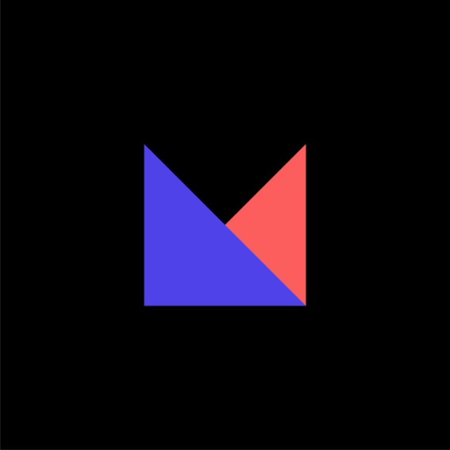

외부모임

Mash up
IT 개발 외부 모임
개발, 디자인에 관심과 열정이 있는 사람들이 모인 단체로 매주 팀별 스터디 진행과 함께 전체 모임의 세미나 및 네트워킹을 진행하고 있으며 이를 통하여 개인의 전문 역량과 협업능력을 증대시키고자 합니다. 궁극적으로 활동 기간동안 프로젝트 팀을 이뤄 서비스를 출시하는 것을 목표로 하고 있는 IT 단체 입니다. 직장인과 학생 구분 없이 서비스에 열정 가득한 사람들이 모여있는 곳으로, 다양한 IT 기업에서 활동하고 있는 동료들을 만나며 현업을 엿볼 수 있습니다!